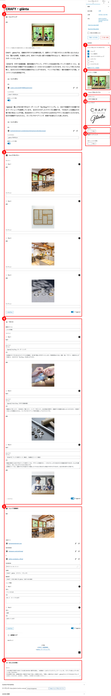
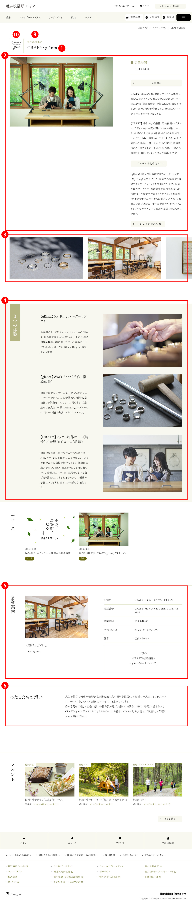

星野エリア
【ショップ＆レストラン】WordPress更新マニュアル
2024.4.4 更新
メニュー
ショップ＆レストランを追加する
- 画面上部の「新規投稿を追加」をクリックします。
- ▼「ショップ＆レストラン」新規登録画面


- タイトル*（必須）
ショップ名を入力します。
- ショップトップ
「メインイメージ」の設定方法
トップに表示される画像を設定することができます。
一覧ページ用およびOGP用に「アイキャッチ画像」が必要になるため、必ず設定いただけますようお願いいたします。
「画像」が未設定の場合、「アイキャッチ画像」が代用されます。
「アイキャッチ画像」とは別の画像をメイン画像にしたい場合、画像をアップまたはライプラリから設定してください。
ショップ紹介文
ショップの紹介文を入力してください。
・ブロック「段落」
・ブロック「リンク-ボタン」
をご利用ください。
- ショップ ギャラリー
スライドショー形式のキャラリーになります。
画像をアップしてください。
- ベスト3
ショップのおすすめ等、ピックアップ商品・サービスを掲載するコンテンツになります。
縦書きタイトル
任意にタイトルを設定できます。
各項目毎に
・BEST：サブタイトル
・タイトル：項目タイトル
・本文：項目の説明文（本文）
・画像：商品・サービス画像
を設定できます。
- ショップ 営業案内
・画像：ショップのイメージ画像
・WEBサイト、INSTAGRAM、X、FACEBOOK：各URLを設定
・店舗名：店舗名を入力
・電話番号：
ショップ情報
見出し付きリスト形式になります。
・見出し
・本文
を任意に入力できます。
ショップ 営業案内
金枠線エリア
- わたしたちの想い
ショップの想い、こだわりなどを記入してください。
- ショップ＆レストランのカテゴリ
ショップの分類や提供サービスを選択してください
- アイキャッチ画像*（必須）
「アイキャッチ画像を設定」を選択し、画像を設定します。
一覧画面で表示されるサムネイル画像になります。
OGP画像としても流用されます。
- サブタイトル
ショップの分類やサービス名など任意に入力してください
- ショップロゴ
ショップロゴ画僧をアップしてください。
正方形の画像を用意してください。
- Wi-Fi
Free Wi-Fiを提供している施設はONにしてください
- 施設ページへリンク
村民食堂やブレストンコート ユカワタンなど、ショップ＆レストラン配下のページ以外へリンクさせたい場合に、リンク先URLを指定してください。
リンク先URLを新規ウィンドウで開きたい場合はONにしてください。